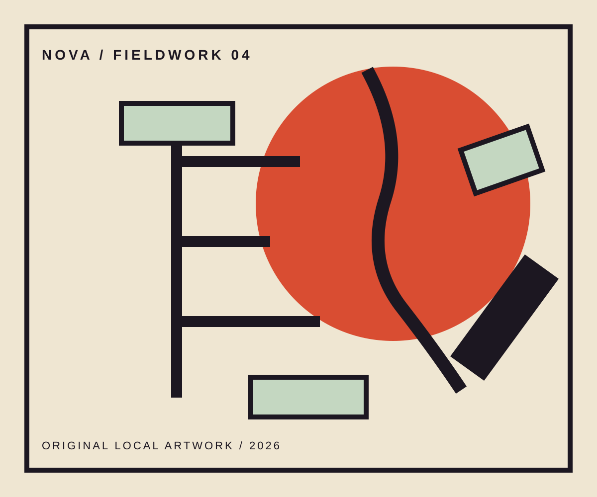

Creative studio / identity in the real world
Give the idea some weather.
NOVA takes a sharp point of view out of the deck and into the places, objects, interfaces, and stories where people can actually feel it.
Explore the fieldwork
A brand gets real when it meets a surface.
We look for the materials that can carry an idea with conviction. Then we build the visual and verbal system around those materials, so the work gains detail instead of losing its point.
Work with a pulse
Identity / environments / digital experiences
A local music program with a bigger public stage.
Night culture made tangible before the doors even open.
Go out. Notice. Make it hold.
Find the material truth01
Give it a recognisable form02
Build a system with range03
Put it where people are04
Take the idea somewhere.
Independent studio / selected collaborations